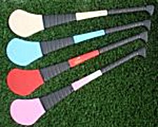

Pink Jerseys from O'Neills
Cheer on your county by wearing the pink version of the official County Jersey. The jersey features Koolite moisture management to keep you cool during those tense match moments.
Why not add the number of your favourite player for optimum support?
Available from O'Neills. [more...]
GAA Jewellery
Dedicated GAA supporters will be able to wear their county colours close to their sleeves as well as their hearts through the new Love Your County GAA jewellery collection
Range includes bracelets, pendants, ear rings and rings.
Custom Helmets
Lightweight helmet from O'Neills. Includes a removable, washable liner containing Aerosilver technology, a new healthcare fibre which eliminates harmful odour causing germs. It also dries fast and evaporates moisture rapidly to maintain a cool body temperature.
Your helmet can be personalised in many colour combinations with your name, club crest, club name and initials.
Conforms to NSAI IS 355 safety standards.
Available from O'Neills.
[more...]
Cultec Hurleys
Cultec hurleys are synthetic (plastic) which come in a range of colours and sizes. They are strong and less likely to break than conventional Ash hurleys.
They are light in weight and the smaller sizes have a nice narrow grip.
Camogie T-Shirts
Like to teach the world to swing? In perfect harmony. Like to hold it in your hand? Camogs like pulling harder. Such ball to hand co-ordination. It's the real thing!
Get your "Coca Cola" camogie t-shirt from Squareball [more...]